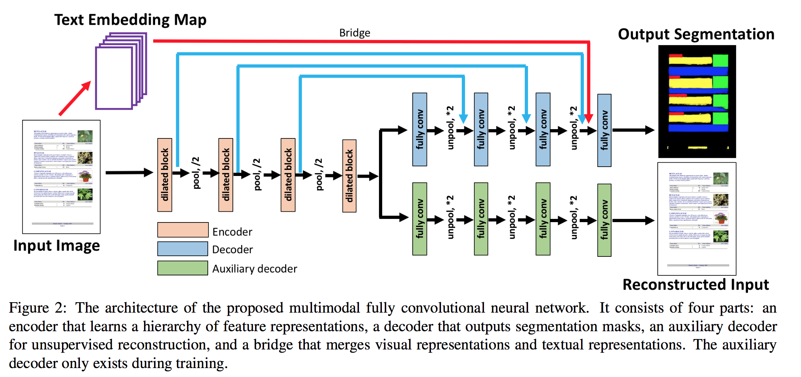

Learning to Extract Semantic Structure from Documents Using Multimodal Fully Convolutional Neural Networks |
||||||||||||||||||||||||||||||||||||||||||||||||||||||||||||||||||||||||||||||||||||||||||||||||||
 |
Abstract
We present an end-to-end, multimodal, fully convolutional network for extracting semantic structures from document images. We consider document semantic structure extraction as a pixel-wise segmentation task, and propose a unified model that classifies pixels based not only on their visual appearance, as in the traditional page segmentation task, but also on the content of underlying text. Moreover, we propose an efficient synthetic document generation process that we use to generate pretraining data for our network. Once the network is trained on a large set of synthetic documents, we fine-tune the network on unlabeled real documents using a semi-supervised approach. We systematically study the optimum network architecture and show that both our multimodal approach and the synthetic data pretraining significantly boost the performance. | |
Network Architecture
 | |
Paper
Learning to Extract Semantic Structure from Documents Using Multimodal Fully Convolutional Neural Networks. Xiao Yang, Ersin Yumer, Paul Asente, Mike, Kraley, Daniel Kifer, C. Lee Giles, IEEE Conference on Computer Vision and Pattern Recognition (CVPR), 2017. (link) | |
Supplementary Material | |
Acknowledgement This work started during Xiao Yang's internship at Adobe Research. This work was supported by NSF grant CCF 1317560 and Adobe Systems Inc. |